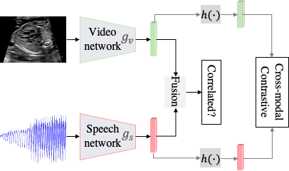
Self-supervised Contrastive Video-Speech Representation Learning for Ultrasound
Jianbo Jiao, Yifan Cai, Mohammad Alsharid, Lior Drukker, Aris Papageorghiou, Alison Noble
International Conference on Medical Image Computing and Computer Assisted Intervention (MICCAI), 2020
[PDF] [BibTeX]
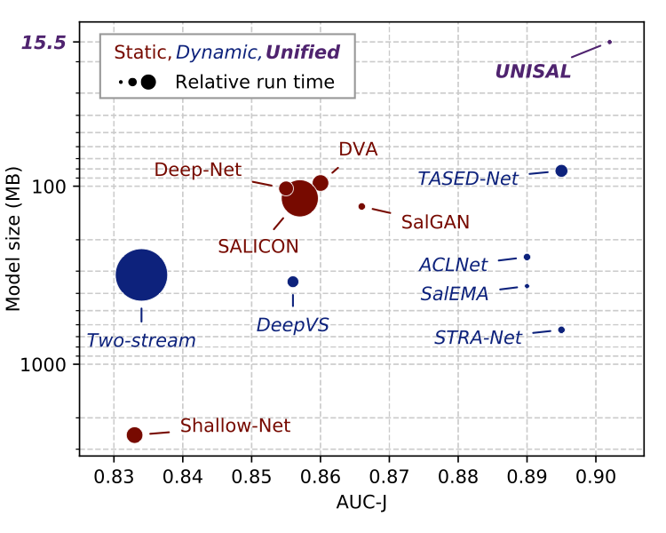
Unified Image and Video Saliency Modeling
Richard Droste*, Jianbo Jiao*, Alison Noble (*Equal contribution)
European Conference on Computer Vision (ECCV), Spotlight Presentation, 2020
[PDF] [BibTeX] [Project]
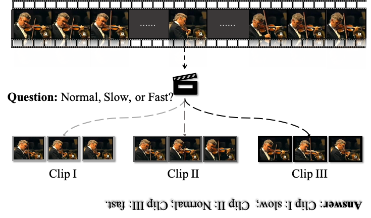
Self-supervised Video Representation Learning by Pace Reasoning
Jiangliu Wang, Jianbo Jiao, Yun-Hui Liu
European Conference on Computer Vision (ECCV), 2020
[PDF] [BibTeX] [Code]
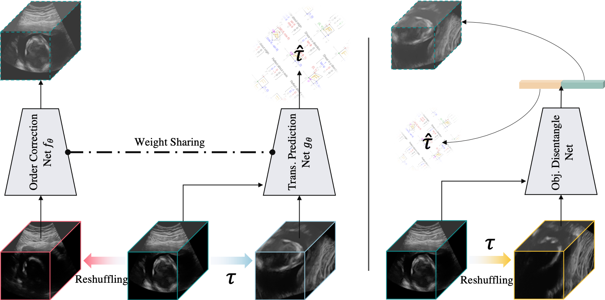
Self-supervised Representation Learning for Ultrasound Video
Jianbo Jiao, Richard Droste, Lior Drukker, Aris Papageorghiou, Alison Noble
IEEE International Symposium on Biomedical Imaging (ISBI), 2020
[PDF] [BibTeX]
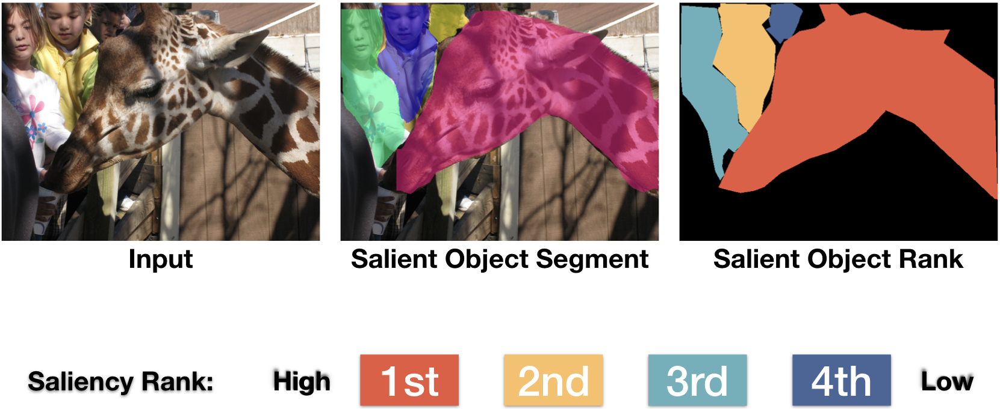
Inferring Attention Shift Ranks of Objects for Image Saliency
Avishek Siris, Jianbo Jiao, Gary K.L. Tam, Xianghua Xie, Rynson W.H. Lau
IEEE Conference on Computer Vision and Pattern Recognition (CVPR), 2020
[PDF] [BibTeX] [Project]
 When AWGN-based Denoiser Meets Real Noises
When AWGN-based Denoiser Meets Real Noises
Yuqian Zhou, Jianbo Jiao, Haibin Huang, Yang Wang, Jue Wang, Honghui Shi, Thomas S. Huang
AAAI Conference on Artificial Intelligence (AAAI), Spotlight Presentation, 2020
[PDF] [BibTeX] [Code]
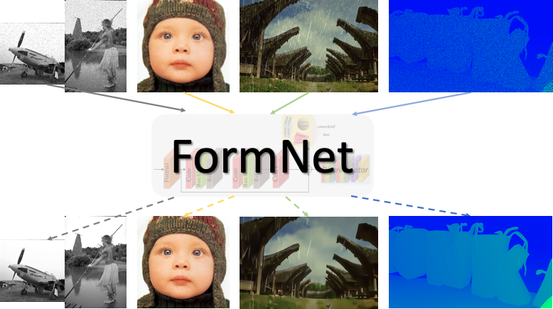
FormNet: Formatted Learning for Image Restoration
Jianbo Jiao, Wei-Chih Tu, Ding Liu, Shengfeng He, Rynson Lau, Thomas S. Huang
IEEE Transactions on Image Processing (TIP), 2020
This paper subsumes our preliminary work presented at CVPRW 2017.
[PDF] [BibTeX] [Code]
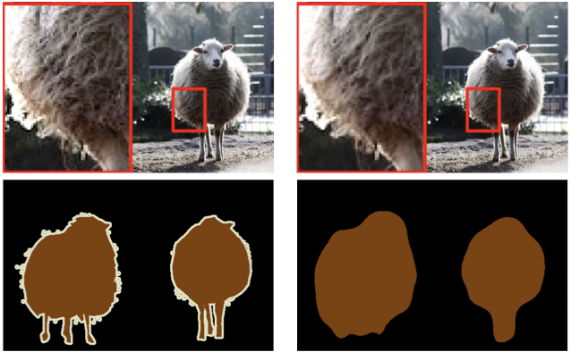
Connecting Image Denoising and High-Level Vision Tasks via Deep Learning
Ding Liu, Bihan Wen, Jianbo Jiao, Xianming Liu, Zhangyang Wang, Thomas S. Huang
IEEE Transactions on Image Processing (TIP), 2020
[PDF] [BibTeX]
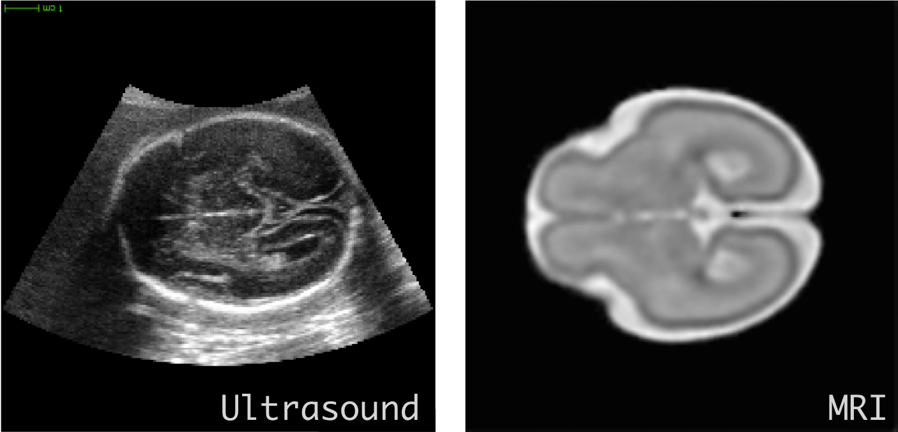
Anatomy-Aware Self-supervised Fetal MRI Synthesis from Unpaired Ultrasound Images
Jianbo Jiao, Ana Namburete, Aris Papageorghiou, Alison Noble
International Conference on Medical Image Computing and Computer Assisted Intervention (MICCAI) Workshop on Machine Learning in Medical Imaging (MLMI), Oral Presentation, 2019
[PDF] [BibTeX] [Presentation]
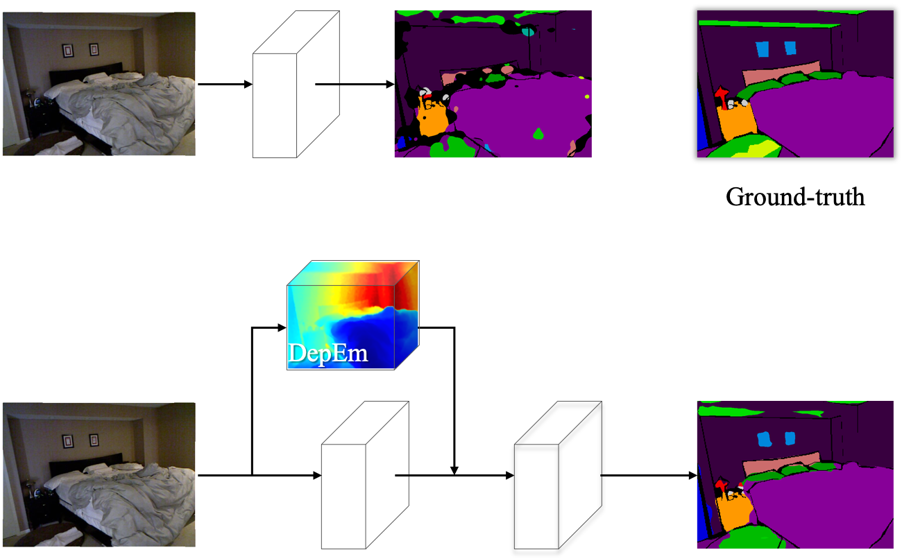
Geometry-Aware Distillation for Indoor Semantic Segmentation
Jianbo Jiao, Yunchao Wei, Zequn Jie, Honghui Shi, Rynson W.H. Lau, Thomas S. Huang
IEEE Conference on Computer Vision and Pattern Recognition (CVPR), 2019
[PDF] [BibTeX] [Code]
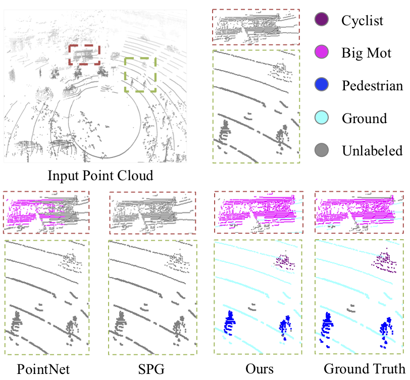
Ground-Aware Point Cloud Semantic Segmentation for Autonomous Driving
Jian Wu, Jianbo Jiao, Qingxiong Yang, Zheng-Jun Zha, Xuejin Chen
ACM International Conference on Multimedia (ACM MM), Oral Presentation, 2019
[PDF] [BibTeX] [Project]
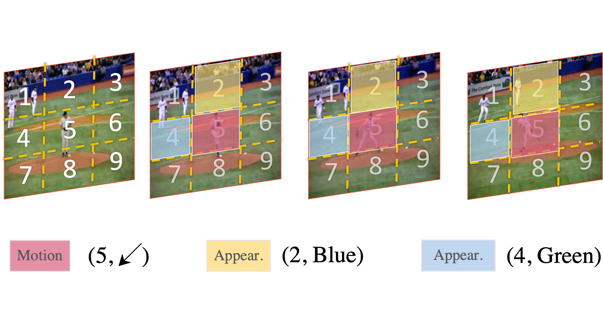
Self-supervised Spatio-temporal Representation Learning for Videos by Predicting Motion and Appearance Statistics
Jiangliu Wang, Jianbo Jiao, Linchao Bao, Shengfeng He, Yunhui Liu, Wei Liu
IEEE Conference on Computer Vision and Pattern Recognition (CVPR), 2019
[PDF] [BibTeX] [Code]
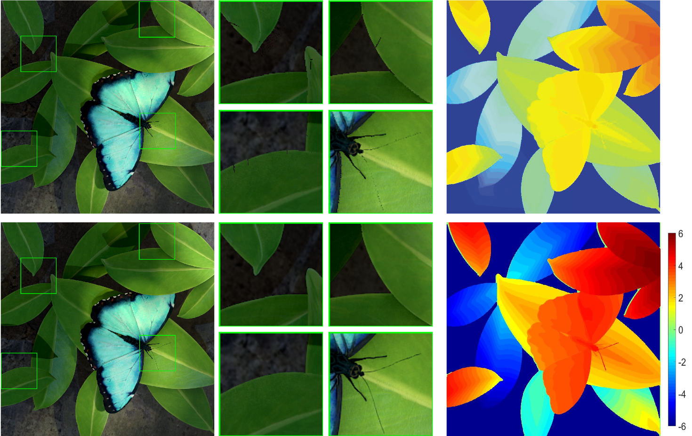
Stereoscopic Image Generation from Light Field with Disparity Scaling and Super-Resolution
Tao Yan, Jianbo Jiao, Wenxi Liu, Rynson W.H. Lau
IEEE Transactions on Image Processing (TIP), 2019
[PDF] [BibTeX]
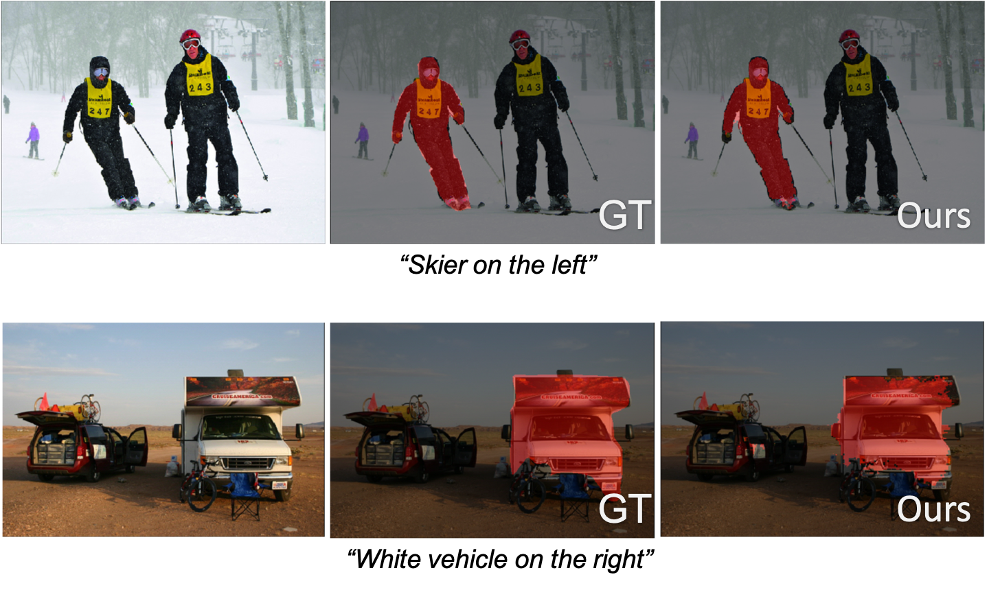
Referring Image Segmentation by Generative Adversarial Learning
Shuang Qiu, Yao Zhao, Jianbo Jiao, Yunchao Wei, Shikui Wei
IEEE Transactions on Multimedia (TMM), 2019
[PDF] [BibTeX]
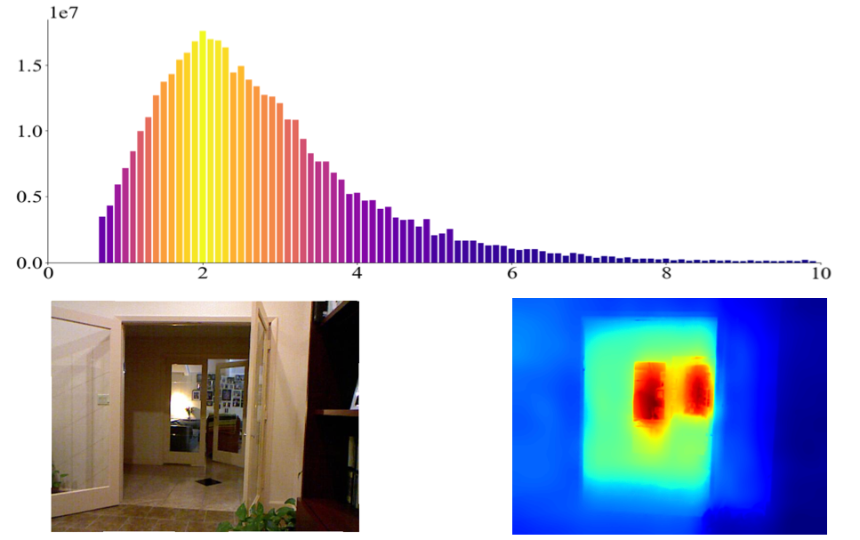
Look Deeper into Depth: Monocular Depth Estimation with Semantic Booster and Attention-Driven Loss
Jianbo Jiao, Ying Cao, Yibing Song, Rynson W.H. Lau
European Conference on Computer Vision (ECCV), 2018
[PDF] [BibTeX] [Code]
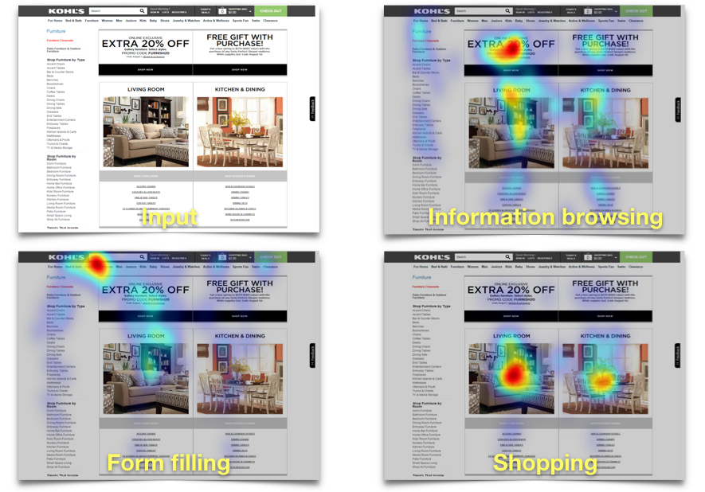
Task-Driven Webpage Saliency
Quanlong Zheng, Jianbo Jiao, Ying Cao, Rynson W.H. Lau
European Conference on Computer Vision (ECCV), 2018
[PDF] [BibTeX] [Project]
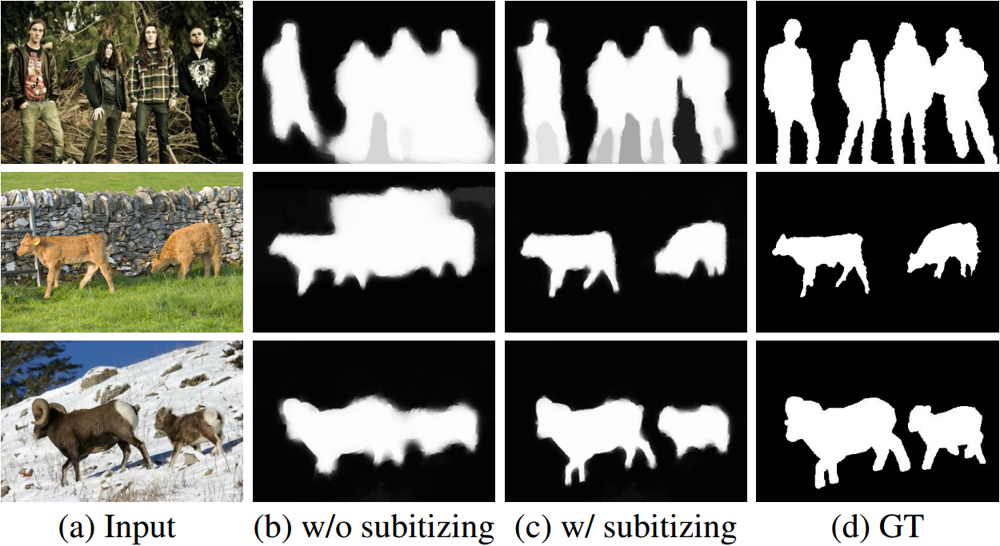
Delving into Salient Object Subitizing and Detection
Shengfeng He, Jianbo Jiao, Xiaodan Zhang, Guoqiang Han, Rynson W.H. Lau
IEEE International Conference on Computer Vision (ICCV), 2017
[PDF] [BibTeX]
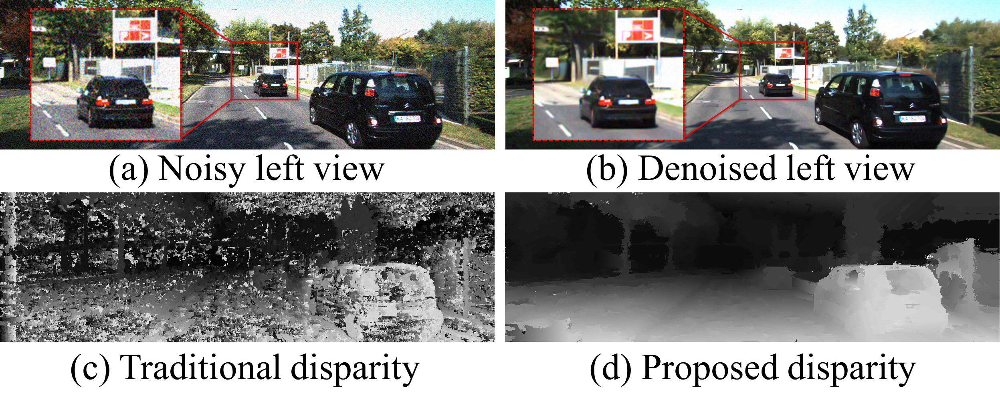
Joint Image Denoising and Disparity Estimation via Stereo Structure PCA and Noise-Tolerant Cost
Jianbo Jiao, Qingxiong Yang, Shengfeng He, Shuhang Gu, Lei Zhang, Rynson W. H. Lau
International Journal of Computer Vision (IJCV), 2017
[PDF] [BibTeX] [Code] [Data]
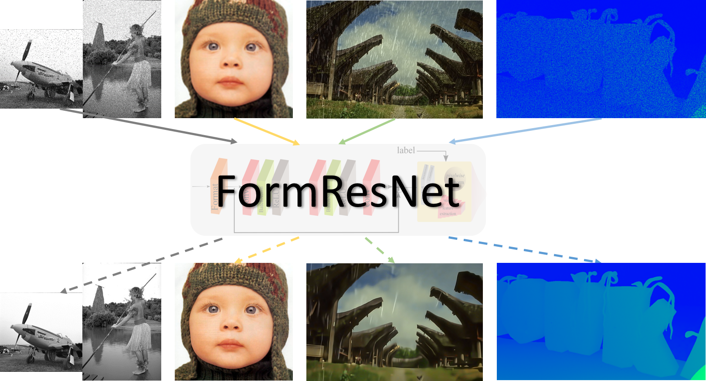
FormResNet: Formatted Residual Learning for Image Restoration
Jianbo Jiao, Wei-Chih Tu, Shengfeng He, Rynson W. H. Lau
IEEE Conference on Computer Vision and Pattern Recognition (CVPR) Workshop (NTIRE), Oral Presentation, 2017
[PDF] [BibTeX] [Code] [Slides] [Poster]
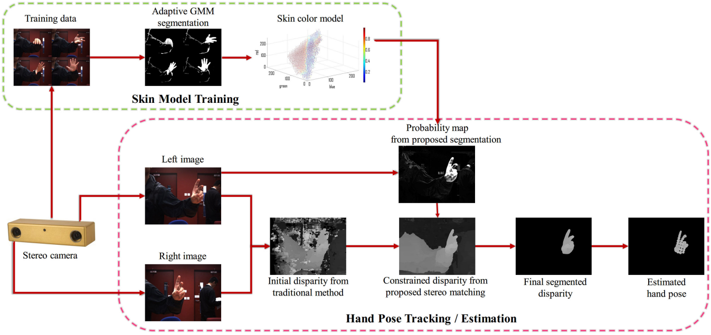
A Hand Pose Tracking Benchmark From Stereo Matching
Jiawei Zhang, Jianbo Jiao, Mingliang Chen, Liangqiong Qu, Xiaobin Xu, Qingxiong Yang
IEEE International Conference on Image Processing (ICIP), Oral Presentation, 2017
[PDF] [Tech Report] [BibTeX] [Data]
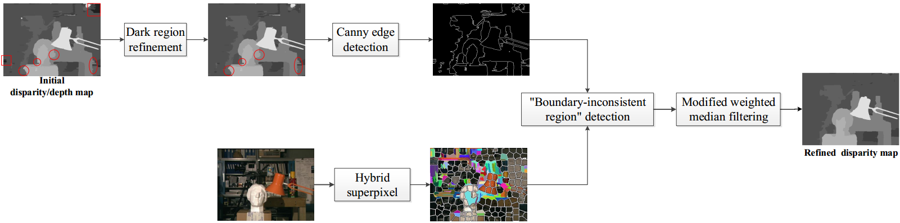
Color Image Guided Boundary-inconsistent Region Refinement for Stereo Matching
Jianbo Jiao, Ronggang Wang, Wenmin Wang, Dagang Li, Wen Gao
IEEE Transactions on Circuits and Systems for Video Technology (TCSVT), 2015
[PDF] [BibTeX] [Code]
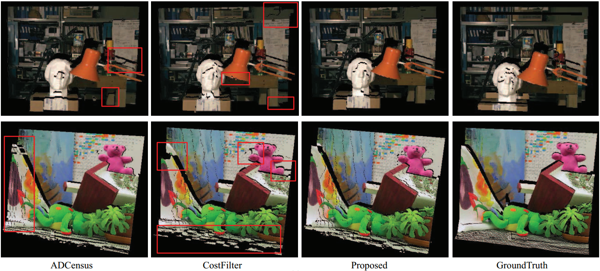
Local Stereo Matching with Improved Matching Cost and Disparity Refinement
Jianbo Jiao, Ronggang Wang, Wenmin Wang, Shengfu Dong, Zhenyu Wang, Wen Gao
IEEE Multimedia, 2014
[PDF] [BibTeX]
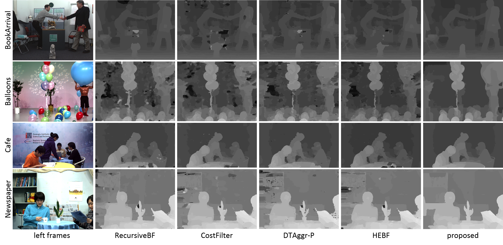
Cost-Volume Filtering-Based Stereo Matching with Improved Matching Cost and Secondary Refinement
Jianbo Jiao, Ronggang Wang, Wenmin Wang, Shengfu Dong, Zhenyu Wang, Wen Gao
IEEE International Conference on Multimedia and Expo (ICME), Oral Presentation (Best Student Paper candidate), 2014
[PDF] [BibTeX] [Slides] [Poster] [demo]
Conference Reviewer:
WACV 2021, CVPR 2020, ECCV 2020, MICCAI 2020, AAAI 2020, IJCAI2020, ACCV 2020, ICCV 2019 (Outstanding Reviewer), CVPR 2019, MICCAI 2019, Pacific Graphics 2018
Journal Reviewer:
IEEE T-PAMI, T-IP, T-NNLS, T-CSVT, T-Cybernetics, T-MM, Multimedia, Signal Processing Letters; Neurocomputing, Journal of Visual Communication and Image Representation (Outstanding Reviewer), Computer Vision and Image Understanding, Computer Graphics Forum